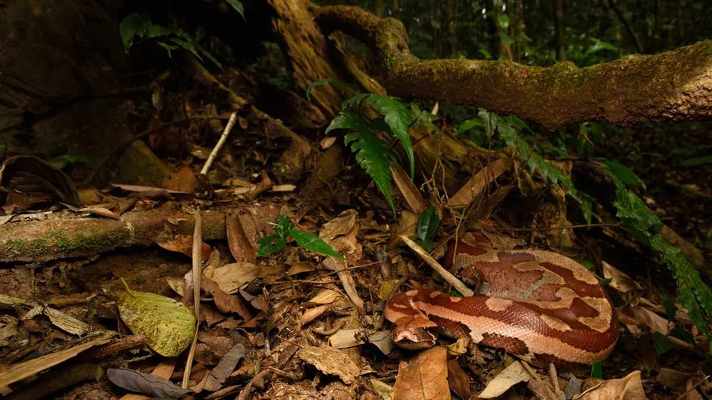

爬行动物 · 动物界
血蟒 Python brongersmai

东南亚短粗的蟒蛇，体色暗红、花纹十分华丽，因皮革贸易被大量捕捉，也是宠物蟒市场的常见物种。
- 分类
- 门脊索动物门纲爬行纲目有鳞目科蟒科属蟒属
- 栖息环境
- 东南亚的沼泽、河岸、雨林与农田边缘
- 地理分布
- 马来半岛、苏门答腊岛等东南亚地区
- 保护级别
- IUCN 无危（LC）；CITES 附录 II；非中国原产
物种志
血蟒体长 1.2–1.8 米，个别可达 2.4 米，身体短粗，头部与颈部区分明显；体色以暗红、橙红或砖红色为底，散布深褐色和黑色的斑块与网纹，腹部淡黄，“血蟒”之名来自它殷红的体色。它的鳞片光滑，体型虽短却十分粗壮。
它分布于马来半岛、苏门答腊岛等东南亚地区，栖息于沼泽、河岸、雨林与农田附近，多在夜间活动，捕食鼠类、鸟类和小型哺乳动物。每年 11 月至次年 2 月繁殖，雌蟒产卵 10–30 枚，盘在卵上孵卵约 60–70 天。血蟒因花纹鲜艳被大量用作皮革原料，也被捕捉作为宠物；目前野外种群数量尚可，被列为无危物种，国际贸易受国际公约监管。
形态与习性
- 食性鼠类、鸟类和小型哺乳动物
- 体长1.2–1.8 m，最长约 2.4 m
- 体重约 3–10 kg
- 寿命约 15–20 年
- 繁殖卵生，10–30 枚，孵化 60–70 天
- 活动节律夜行性，多在近水处活动
趣味知识
- 血蟒体色暗红，是蟒蛇中颜色最偏红的种类之一。
- 它身体短粗、行动缓慢，常待在近水的隐蔽处伏击猎物。
- 血蟒的皮革在市场上价格较高，因此被大量捕捉。